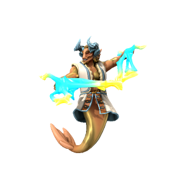

Djinn
ʤɪn

Loga often has dalliances with minor desert fey, enjoying their tendency to produce marages to mislead travellers. Djinn are born of these dalliances, embodying the winds and sand of the desert and the deceptive nature of their daemon parent.
Lamps
Long ago, before the elves colonised Kashar, Loxodon priests of old developed magic spells to trap djinn in oil lamps. These djinn would become bound to whomever holds the lamp, able to use their powers only in service of their new masters. However, djinn are patient and cunning; wishes they grant rarely end well for the wisher, they always find some way to turn their master's wishes against them. None in the old days were able to hold a lamp for long, so over time the locations of these lamps has been lost to history.
🡐 Deigenic species